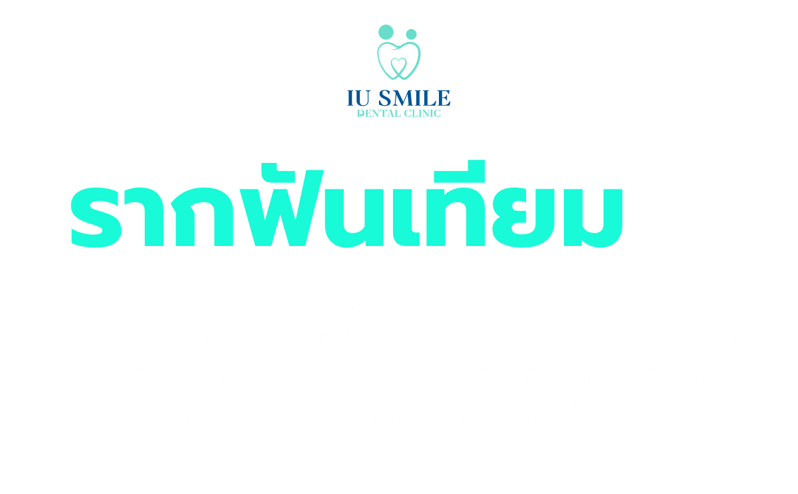
นัดหมายปรึกษา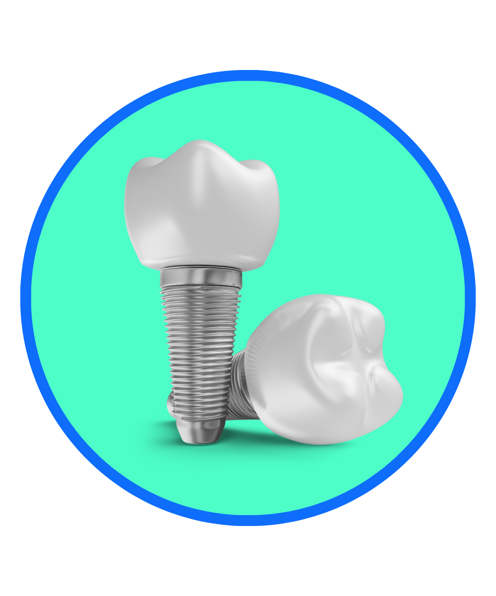
ทันตแพทย์จะตรวจสุขภาพช่องปากโดยรวม พิมพ์ปาก และถ่ายภาพรังสี (X-ray) รวมถึงการเอกซเรย์คอมพิวเตอร์ 3 มิติ (Dental CT Scan) เพื่อประเมินความหนาและความหนาแน่นของกระดูกขากรรไกร ตำแหน่งของเส้นประสาทและไซนัส รวมถึงเลือกขนาดและตำแหน่งของรากฟันเทียมที่เหมาะสมที่สุด
หากมีฟันผุ เหงือกอักเสบ หินปูน หรือโรคปริทันต์ จะต้องได้รับการรักษาและเคลียร์ช่องปากให้เรียบร้อยก่อน กรณีที่กระดูกขากรรไกรบางหรือน้อยเกินไป: ทันตแพทย์อาจพิจารณาทำการ ปลูกกระดูก (Bone Grafting) หรือยกพื้นโพรงไซนัสก่อนฝังรากฟันเทียม เพื่อให้มีฐานรองรับที่มั่นคง (ขั้นตอนนี้อาจต้องใช้เวลาพักฟื้นกระดูกเพิ่มอีก 3–6 เดือน)
ทันตแพทย์จะฉีดยาชาเฉพาะส่วน จากนั้นเปิดเหงือกและเจาะรูในกระดูกขากรรไกรด้วยเครื่องมือแพทย์เฉพาะทาง
ทำการฝังหมุดไทเทเนียม ลงไปในกระดูกขากรรไกรแทนรากฟันเดิม แล้วเย็บปิดเหงือก
หลังจากนั้นจะเข้าสู่ระยะเวลา การประสานของกระดูก (Osseointegration) ใช้เวลาประมาณ 3–6 เดือน
เพื่อให้เซลล์กระดูกเจริญเติบโตยึดติดแน่นกับผิวของรากฟันเทียมจนมั่นคงแข็งแรง
เมื่อกระดูกยึดติดกับรากฟันเทียมดีแล้ว ทันตแพทย์จะทำการเปิดเหงือกอีกครั้ง (หรือในบางเคสอาจใส่หัวเชื่อมไว้ตั้งแต่แรก) เพื่อติด เดือยยึดครอบฟัน (Abutment) เข้ากับตัวรากฟันเทียมที่ฝังไว้รอให้เหงือกบริเวณรอบๆ เดือยเข้าที่และแนบสนิทดีประมาณ 1–2 สัปดาห์
ทันตแพทย์จะพิมพ์ปากหรือสแกนช่องปากดิจิทัล เพื่อส่งห้องปฏิบัติการทันตกรรม (Dental Lab) ในการสร้าง ครอบฟัน (Crown) ให้มีสี รูปทรง และขนาดกลมกลืนกับฟันธรรมชาติข้างเคียงเมื่อครอบฟันเสร็จเรียบร้อย ทันตแพทย์จะทำการยึดครอบฟันเข้ากับเดือยรองรับ เป็นอันเสร็จสิ้นกระบวนการ สามารถใช้งานบดเคี้ยวได้ตามปกติ
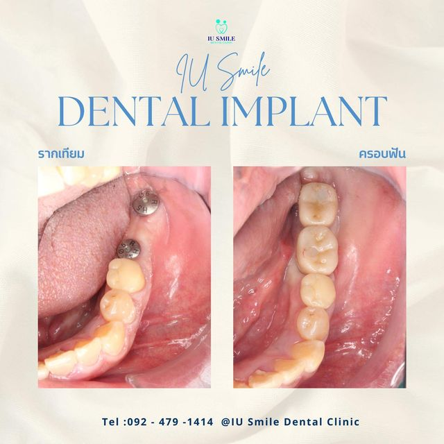
รากฟันเทียมยึดติดแน่นกับกระดูกขากรรไกร ทำให้มีแรงบดเคี้ยวดีเยี่ยม สามารถเคี้ยวอาหารได้ทุกชนิดอย่างมั่นใจ ไม่โยกคลอนหรือหลุดเลื่อนเหมือนฟันปลอมถอดได้
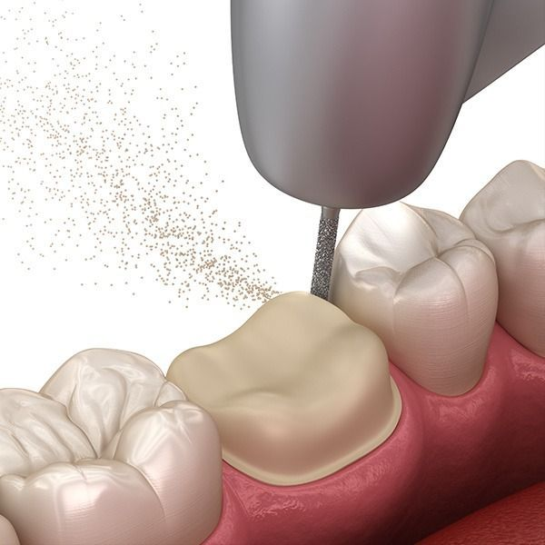
ต่างจากการทำสะพานฟันแบบดั้งเดิมที่ต้องกรอฟันซี่ข้างเคียงที่ยังแข็งแรงมารองรับ การทำรากฟันเทียมจะเป็นการรักษาเฉพาะตำแหน่งที่สูญเสียฟันไป ช่วยคงสภาพและปกป้องเนื้อฟันธรรมชาติซี่อื่นไว้ได้เต็มที่
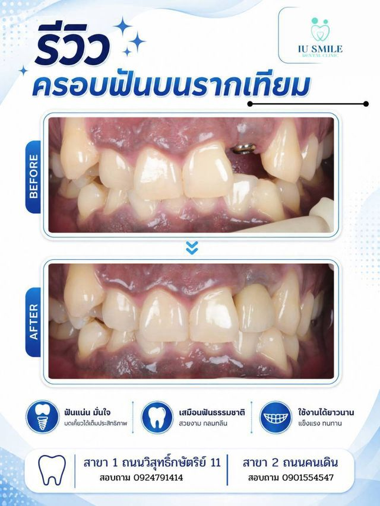
การมีรากฟันเทียมฝังอยู่ช่วยทำหน้าที่กระตุ้นมวลกระดูกขากรรไกรตามธรรมชาติ ป้องกันไม่ให้กระดูกยุบตัวลง ซึ่งช่วยรักษาโครงสร้างใบหน้าให้ดูเป็นธรรมชาติ ไม่ให้แก้มตอบหรือดูแก่ก่อนวัย
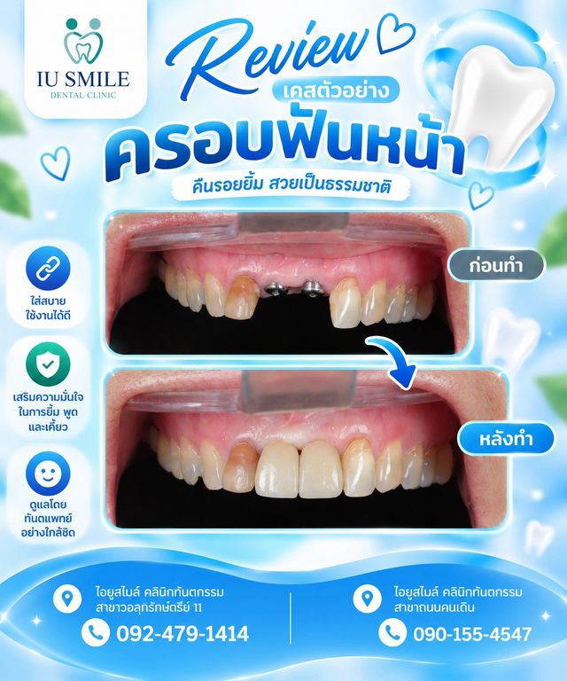
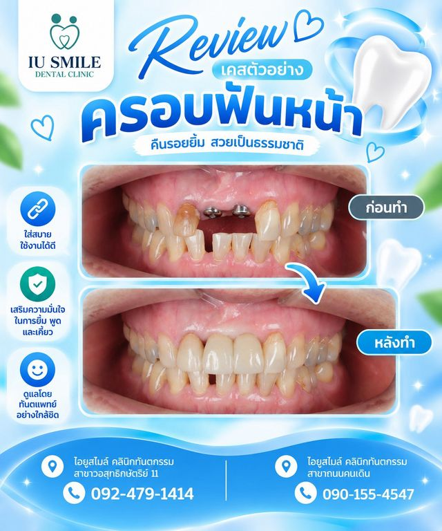
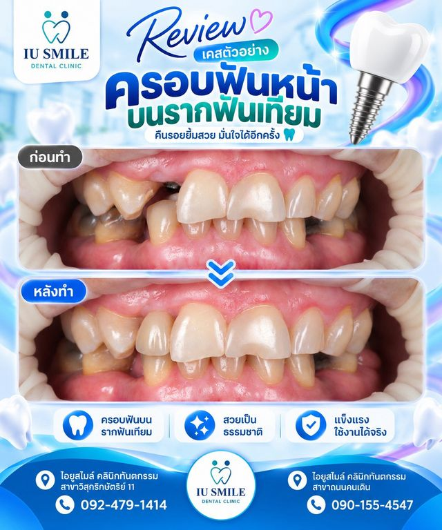
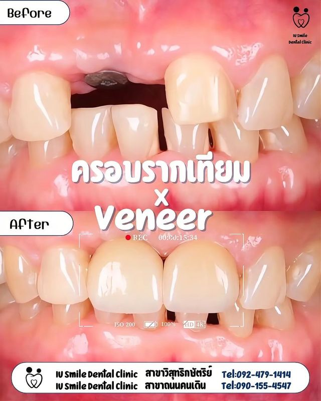
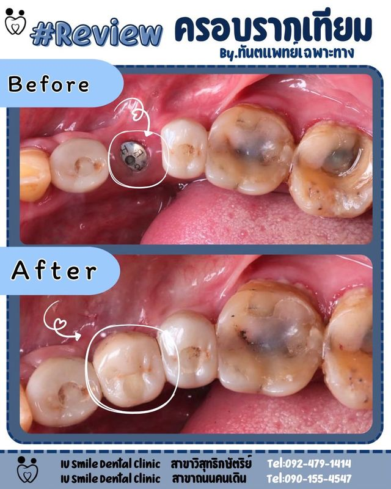
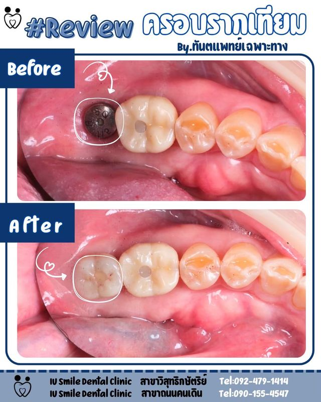
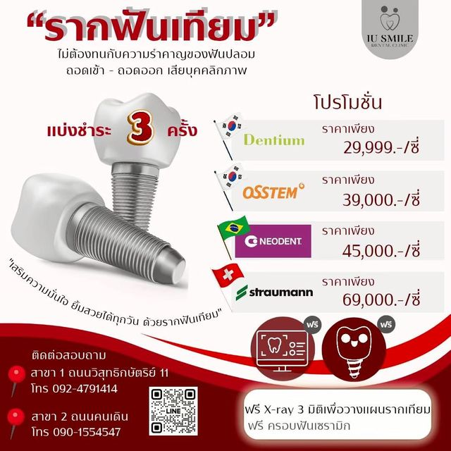